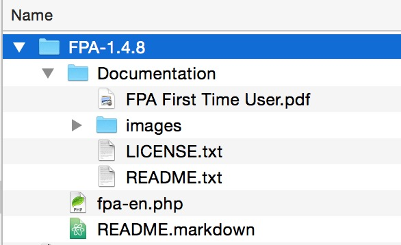

FPA is a standalone script written in PHP, it does not install through the Joomla! Installer and must be manually installed. This means that FPA users are required to download the FPA Package, extract it and upload the script to the website themselves using either their hosting File Manager tools or an FTP/SCP Client.
Ensure that you are working with the latest release of FPA. This can be downloaded below, or access any beta releases if preferred from the FPA Project on Github.
cloud_download Download Latest FPA Here!
Locate the downloaded FPA file and extract/unzip the FPA package on your own computer, you should now have the following folders and files available.
You will need an extraction/un-archiving utility to extract the files. Windows users can simply double-click the downloaded FPA file or right-click and use the native Windows Extract Tool, Linux/Unix/Mac users can use use the native Tar/Zip utilities. Alternatively, you can also use tools such as WinZip, 7-Zip, or PeaZip
| Package Contents | Folder/File Name | Purpose |
|---|---|---|
|  | Documentation/ | |
| Documentation/FPA First Time User.pdf | Brief instructions on how to use | |
| Documentation/images/ | ||
| Documentation/LICENSE.txt | Copy of the GNU General Public License v3 | |
| Documentation/README.txt | Information about the FPA Project and the FPA script (in text format) | |
| fpa-en.php | The Forum Post Assistant script | |
| README.markdown | Information about the FPA Project and the FPA script (in markdown format) |
The FPA script file now needs to be uploaded to your where your website is located, there are several methods to achieve this depending on your knowledge, experience and web hosting setup.
Note: The Forum Post Assistant script does not need any configuring or editing before uploading.
To use this method you will need to have FTP Access to your web hosting account and your account login credentials, including a working FTP Client app/software installed.
You can use your operating systems native FTP command-line tools or any of the following File Transfer (FTP) or Secure Copy (SCP) applications will do the job: Transmit, WinSCP, CyberDuck, FileZilla
To use this method you will need to have access to your hosting Control Panel and your account login credentials.
In some cases you may need to access your hosts Client Portal first, then access you hosting Control Panel.
Common hosting Control Panels are: cPanel & WHM, Plesk, DirectAdmin, Webmin
Work In Progress
Work In Progress